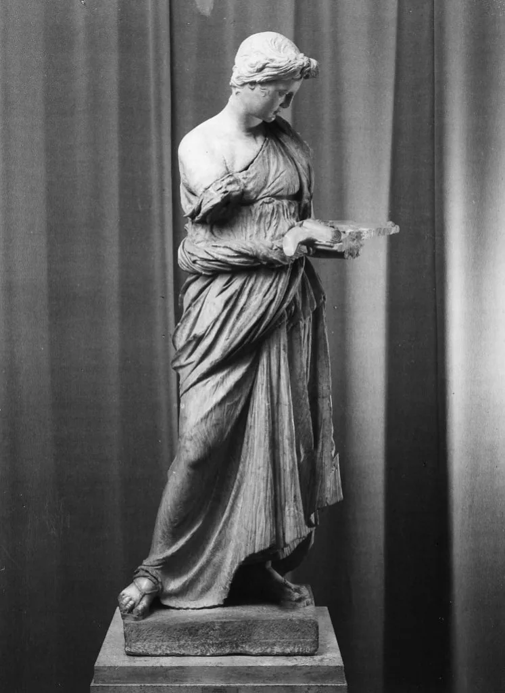
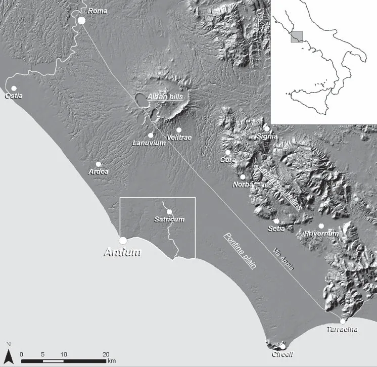
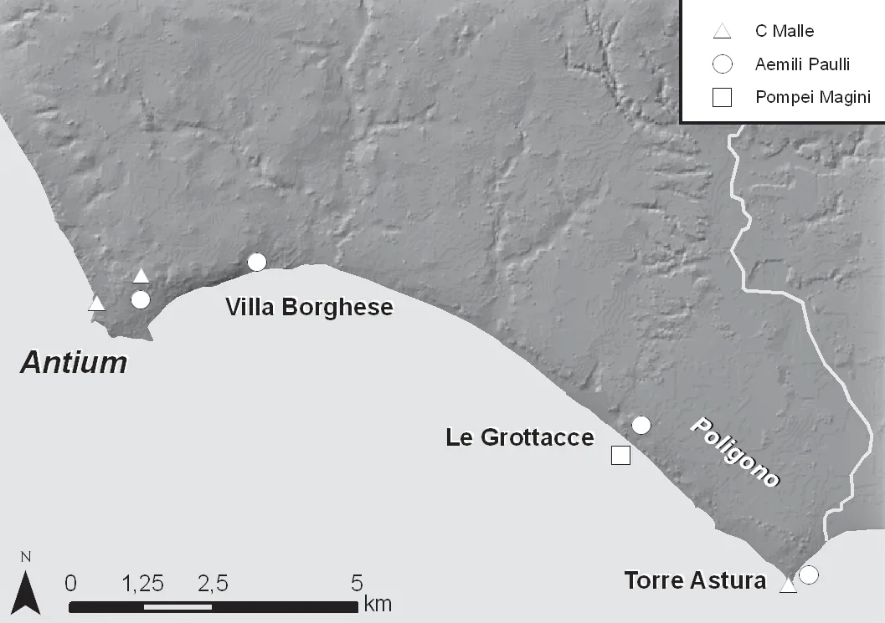
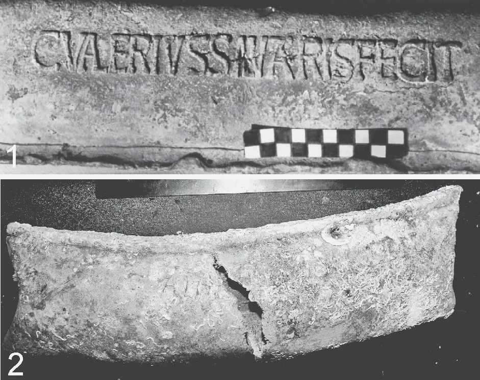

Antium, la città che la storia ricorda con il volto dei suoi nemici
Volsci, Coriolano, Cicerone e gli dèi di una capitale di mare: dodici secoli di storia letti nel Tomo III del gesuita Giuseppe Rocco Volpi, De Antiatibus et Norbanis (Padova, 1726), e rimessi al passo con gli studi recenti (Brandizzi Vittucci 2000, de Haas, Tol e Attema 2011) e con l'avvocato Soffredini (1879).
Il nome arrivato dopo
Ad Anzio qualcosa non torna. I Volsci, il popolo che per secoli portò la guerra a Roma proprio da questa costa, arrivarono quando la città esisteva già da tempo. La trovarono, la conquistarono, ne fecero la loro capitale sul mare. Non la fondarono loro. Eppure è con la loro faccia che la storia la ricorda, come se un luogo restasse legato per sempre a chi, un giorno, ci passò con le armi.
Su chi l'avesse fondata, gli antichi litigavano. Per i Greci era stato Anteia, figlio nientemeno che di Ulisse e della maga Circe. Per altri Ascanio, il figlio di Enea. Altri ancora andavano sul pratico: il nome verrebbe da antrum, grotta, per le tane scavate nella roccia dai primi abitanti della costa.
C'è poi una spiegazione più asciutta, di lingua più che di leggenda. Antium sarebbe latino arcaico, dalla stessa radice di ante, «avanti». Il senso, allora, sarebbe il più semplice e il più adatto a una città di mare sul confine del Lazio: avamposto.
Aphrodisium: un altro nome, quasi dimenticato. Si raccontava che Ascanio avesse costruito qui un tempio a Venere, sua antenata. In greco Venere è Afrodite, e Afrodite viene da aphrós, la spuma del mare. La dea nata dalle onde, per una città che delle onde viveva. (Ma attenzione: altri antichi mettevano l'Aphrodisium più a nord, vicino ad Ardea.)

Una città, o due?
Tutti quei racconti danno per scontata una cosa: che Anzio sia sempre stata dove la vediamo oggi. È davvero così? Nel 2000 l'archeologa Paola Brandizzi Vittucci ha rovesciato il tavolo. Fino a Nerone, dice, di Anzio non ce n'era una ma due. Una città «civile» sulla collina dove oggi sta il borgo di Nettuno, e una colonia più giovane, cresciuta attorno alla grande villa imperiale di Capo d'Anzio. Sarebbe stato Nerone, verso il 60 d.C., a spostare il cuore della città dalla collina al promontorio, costruendoci il porto e i palazzi.
La prova più forte sono le strade. Le tre grandi vie romane disegnate sulle carte antiche non si incontrano a Capo d'Anzio: si incontrano proprio dove oggi c'è il borgo di Nettuno. E c'è un dettaglio che fa sorridere. In certe vecchie mappe l'attuale piazza Mazzini di Nettuno si chiamava «Piazza dei Pozzi di grano», un ricordo di quando Anzio campava di cereali, come dicono le fonti antiche.

Le fonti antiche parlano di un porto chiamato Caenon, attaccato dai Romani nel 469 a.C. Dove stava? Brandizzi Vittucci lo riconosce in un grande bacino paludoso e tondo che le carte storiche chiamano «Pantano», subito a ovest di Nettuno, all'altezza del fiume Loracina. Il nome torna: caenum, in latino, è il fango. Un'idea che seduce, ma tutta da dimostrare, perché lì uno scavo vero non è mai stato fatto.
I Volsci e il mare
I Volsci erano un antico popolo italico, gente di montagna del Lazio del sud. Gli storici romani li dipingono combattivi e indomabili. Livio scriveva che erano «più bellicosi nel ribellarsi che nel condurre una guerra»: bravissimi a cominciare le guerre, meno a finirle.
Tra la fine del VI e l'inizio del V secolo a.C. occuparono mezzo Lazio costiero e fecero di Anzio la loro capitale, la «testa dei Volsci», come la chiamavano i Romani. Campavano di navigazione e, va detto, di pirateria, che spingevano «fino al Mar Egeo». E qui c'è una cosa da capire, perché spiega tutta la città. L'Anzio fortificata stava in collina; il porto stava in basso, vicino al mare, fuori dalle mura. Due posti separati, uniti da una strada: lo stesso schema di una base navale di oggi.
Coriolano, l’ospite ucciso nel foro
Le guerre tra Roma e gli Anziati durarono un secolo e mezzo. La storia più famosa è quella di Caio Marzio Coriolano, un nobile romano cacciato dalla sua città. Nel 489 a.C. si rifugiò ad Anzio, ospite di un notabile del posto, Attio Tullio Aufidio. Insieme portarono i Volsci contro Roma, e l'esercito arrivò a poche miglia dalle mura.
Roma giocò l'ultima carta. Mandò avanti la madre di Coriolano, Veturia, con la moglie Volumnia, e le lacrime della madre convinsero il figlio a ritirarsi. Per lui fu la fine. Tornato ad Anzio, Attio Tullio ormai lo vedeva come un rivale: lo fece accusare di tradimento e uccidere nel foro.
Il finale, però, ha una piega che non ti aspetti. Gli stessi Anziati, pentiti, gli resero onore. Dionigi racconta che «portarono il corpo con grandissimi onori ed eressero un monumento insigne nel centro del foro di Anzio, nel luogo stesso dove era caduto, ornandolo con le armi e le spoglie del guerriero». Chi cerca il foro di Antium, quindi, cerca anche la tomba di Coriolano. Gli studiosi del Sei e Settecento la mettevano nella vallata tra Villa Sarsina, oggi il Municipio, e Villa Albani.
Una parte degli storici dubita che Coriolano sia mai esistito. Il suo nome manca nell'elenco ufficiale dei magistrati di quegli anni, e Dionigi ammette che ai suoi tempi i Volsci lo cantavano nelle loro canzoni: forse un eroe nato dalla tradizione orale. Il monumento del foro non è mai stato trovato. Basta questo per dire che non sia esistito? No. Ma quando una storia passa di bocca in bocca per secoli prima che qualcuno la scriva, il vero e il raccontato si mescolano fino a non poterli più separare.
La fine, e i rostri portati a Roma
La fine arrivò nel 338 a.C., con la grande Guerra Latina. La battaglia decisiva si combatté lungo il fiume Astura, e per Anzio fu durissima: la flotta in parte distrutta, in parte portata via verso Roma. Agli Anziati fu vietato il mare, un colpo mortale per una città che ne viveva. Poi un gesto che era insieme bottino e umiliazione. I rostri, gli speroni di bronzo sulla prua delle navi, furono staccati e portati a Roma, sulla tribuna degli oratori del Foro: i Rostra. Il trionfo del console Menio finì negli elenchi ufficiali di Roma:
Roma cancellò la vecchia Anzio. E la rifece a sua immagine: una colonia di cittadini romani, con i vecchi Anziati superstiti iscritti nelle tribù Mecia e Scapzia, e poco dopo il rango di municipio. Le navi migliori risalirono il Tevere fino agli arsenali di Roma (c'è chi ci vede il primo nucleo della flotta militare romana). E i rostri? Plinio il Vecchio scrisse che «ornavano il Foro come una corona conferita al Popolo Romano». Verso il 470 d.C., più di ottocento anni dopo, un prefetto allungò quella stessa tribuna per festeggiare una vittoria sui Vandali.
Le famiglie di Anzio che fecero fortuna a Roma
Diventare romani ebbe un effetto che di solito non si racconta: ai figli di Anzio si aprirono le carriere nella capitale. Tre famiglie devono ad Anzio l'origine e a Roma la fama. Gli Anzi presero il nome dalla città natale, e da loro venne Valerio Anziate, lo storico che Tito Livio usò per i primi secoli di Roma. Gli Aufidi, che la tradizione faceva discendere da Attio Tullio, diedero due grandi giuristi della tarda Repubblica.
E poi gli Antistii, da non confondere con gli Anzi. Da loro venne il giurista più importante del primo Impero, Marco Antistio Labeone, quello che rifiutò il consolato offerto da Augusto in persona. Cinque secoli dopo la sua morte, le sue opinioni di diritto si citavano ancora nei tribunali dell'Impero d'Oriente.
L’Anzio di Cicerone
La voce più viva sull'Anzio del I secolo a.C. è quella di Cicerone. Dalle lettere all'amico Attico sappiamo che amava stare qui più che in qualsiasi altro posto. La chiamava municipium honestissimum, una cittadina perbene, e arrivò a preferirla a Roma:
Per spiegare ad Attico quanto contasse Anzio, scelse il paragone che l'amico avrebbe capito meglio: Butroto, la cittadina dell'Epiro dove Attico aveva le sue terre e il suo cuore.
Della sua biblioteca anziate era ossessionato, al punto da farsi mandare due archivisti di mestiere. E dalle sue parole esce un dettaglio prezioso. Descrive la villa «dentro la città fortificata», e spiega ad Attico come arrivarci «dalla strada dritta ai giardini». A metà del I secolo a.C., dunque, Anzio era ancora una città murata, chiusa dal vecchio vallo. La casa passò poi a Lepido, il futuro triumviro. E Bruto e Cassio, dopo aver pugnalato Cesare, vennero proprio ad Anzio ad aspettare come andavano le cose.
La città dei Cesari: teatro, circo, terme
Da Augusto in poi Anzio diventò il posto dove gli imperatori venivano a riposare e a divertirsi. Tiberio ci celebrò le nozze del futuro Caligola. Caligola ci nacque, e secondo Svetonio amò Anzio più di ogni altro luogo, tanto che si sparse la voce che volesse portarci la capitale dell'Impero. Anche Nerone ci nacque, e ci tornò sempre: era in villeggiatura proprio qui quando Roma bruciava.
C'era un teatro vicino al tempio di Apollo, e Nerone non si vergognava di salirci a recitare e a cantare. C'era un circo antichissimo, che lui rese famoso con giochi ogni anno. I portici intorno al circo li dipinse un suo liberto, con i ritratti dal vero di tutti i gladiatori: facce, armi, attrezzi del mestiere (come la famosa stoà di Atene, dipinta con la battaglia di Maratona). E c'erano le terme, scaldate da una sorgente di acqua calda detta il Caldano, restaurate ancora in tarda età imperiale.
Scavando ad Anzio è saltata fuori una lastra di marmo con l'organico della villa imperiale. Nomi e mestieri: il maggiordomo, il giardiniere, il bibliotecario, il «custode delle Fortune», il cuoco dei brodi, lo stuccatore, il pavimentatore, l'addetto ai bronzi di Corinto, perfino chi teneva in ordine i giochi con la palla. In fondo la lastra dice che le spese erano approvate «per decreto dei decurioni». Scritta piccola, in coda a un elenco di servitù, è la prova che lì c'era una città vera, con i suoi magistrati. La recuperò il cardinale Alessandro Albani, e finì nella sua celebre raccolta.
La ricchezza veniva dalla campagna
Esci da Anzio romana e cammina verso l'interno: dopo poche centinaia di metri sei in mezzo ai campi, e i campi sono pieni di gente. Fattorie, poderi, grandi ville. Era l'agro di Antium, la campagna che dava da mangiare alla città e soprattutto la faceva ricca. Per molto tempo non se ne sapeva quasi niente.
Poi gli archeologi olandesi del Groningen Institute of Archaeology hanno passato anni a battere i campi del territorio di Nettuno: raccogliendo cocci, contando muri, mappando ogni traccia. Al culmine, nel I secolo d.C., in quella campagna vivevano tra 1.700 e 2.300 persone. La città, intanto, era cresciuta fino a 120 ettari, forse diecimila abitanti. Più di metà della gente viveva dentro le mura. Per il mondo antico è tantissimo.
Le ville sul mare erano anche fabbriche
Attenti alla parola «villa»: inganna. Oggi fa pensare a una casa per le vacanze. Per i Romani ricchi era anche un'azienda. Le Grottacce, sulla costa a sud di Anzio, è il caso più chiaro: accanto alla parte signorile gli archeologi hanno trovato un'officina con migliaia di frammenti di anfore, scarti di fornace, tegole venute male. Lì si fabbricavano contenitori per il vino e, quasi certamente, per l'olio.
Poco lontano, vicino alla villa di Tor Caldara, si cavava zolfo: lo dicono i tubi di terracotta e i grossi vasi forati trovati sul posto. E poi Torre Astura, la grande villa sul mare più a sud, con un porto tutto suo. Così grande che difficilmente serviva solo agli ospiti di casa.

Il porto di Nerone, e il commercio che esplode
All'inizio del I secolo d.C. il geografo Strabone scriveva una cosa strana per una città di mare: Anzio non aveva un vero porto. Poi arrivò Nerone. Fu lui, nella seconda metà del secolo, a costruire il porto con i suoi due bacini, e gli scavi confermano la data. Insieme al porto venne la strada lastricata che da Anzio saliva verso la via Appia, all'altezza di Lanuvio.
Il risultato si legge nei cocci. Da quel momento le anfore e le ceramiche d'importazione (vino, olio, sigillata africana) si moltiplicano anche nelle fattorie di campagna. Il porto trasformò una città di villeggiatura in uno snodo di traffici, capace di rifornire buona parte del Lazio a sud di Roma.
I padroni scritti sui mattoni
Come si fa a sapere chi possedeva tutta questa roba? Gli archeologi leggono i timbri. I produttori marchiavano tegole e tubature col proprio nome, e così, duemila anni dopo, da un mattone esce un cognome. E che cognomi: gli Aemilii Paulli, una delle famiglie più grandi di Roma (sette consoli tra il 302 a.C. e l'1 d.C.), e i Pompei. Le fistulae, i tubi di piombo, dicono anche di più, perché portarsi l'acqua in casa era un privilegio concesso dall'imperatore. Tra i nomi incisi c'è pure un artigiano del posto, un certo Lucio Visullio Antiatino: quel soprannome dice che i tubi si fabbricavano lì.

Tra i nomi sui tubi c'è quello di Tiberio Claudio Spiculo, un ex gladiatore diventato comandante della guardia a cavallo di Nerone, con una tenuta dalle parti di Anzio. Svetonio racconta che Nerone gli regalò beni e case «pari a quelli di uomini che avevano celebrato trionfi». Aveva cominciato combattendo nell'arena per restare vivo. Finì padrone di un pezzo di costa imperiale.
Per molto tempo si è scritto che Antium producesse garum, la salsa di pesce fermentato. La prova era una scritta dipinta su un'anfora. Peccato che quella scritta, riletta con attenzione, non parli di Antium ma di Antipolis, l'odierna Antibes, in Francia. Due nomi simili, due città diverse. Il garum di Anzio va tolto dal racconto. Resta sicuro il vino, e c'è perfino un'anfora bollata datata al 93 a.C.
L’acquedotto, il santuario e il serpente
Cento anni prima di Cicerone, nel 170 a.C., il pretore Caio Lucrezio fece ad Anzio una cosa che contava davvero: un acquedotto che portava in città l'acqua del fiume Loracina. E già che c'era arricchì il santuario di Esculapio, il dio della medicina, con quadri presi come bottino in Macedonia.
Il culto di Esculapio, qui, era antichissimo. Ovidio racconta che all'inizio del III secolo a.C. una pestilenza colpì Roma, e il serpente sacro di Epidauro, creduto il dio in persona, salì da solo sulla nave romana. Al ritorno l'unica sosta fu Anzio. Il serpente scese, andò al tempio del padre, Apollo, si avvolse a una palma del cortile e ci restò tre giorni, «come ospite».
Gli dèi di Antium
Il culto più importante era quello della Fortuna. Ma qui la Fortuna non era una: erano due. Lo dicono una moneta coniata sotto Augusto e un'iscrizione che dedica le offerte al plurale, «Alle Fortune Anziati». Secondo una lettura diffusa, da una parte c'era la Fortuna Equestre (detta anche Virile o Forte), pregata da soldati e cavalieri; dall'altra la Fortuna Muliebre, quella delle donne.
Macrobio scrive che le statue si vedevano muoversi per dare i responsi, mentre i fedeli tiravano a sorte. Orazio dedicò alla dea un'ode famosa: «O diva, gratum quae regis Antium…». Quando Poppea stava per partorire, le immagini delle Fortune furono portate in processione a Roma. E Augusto, durante la guerra civile, arrivò a prendersi una parte del tesoro del tempio per pagare i soldati.
Svetonio racconta che Caligola, pochi mesi prima di morire, ebbe un avviso dalle Sorti di Anzio. Doveva «guardarsi da un Cassio». Lui lo prese alla lettera e ordinò di uccidere un tale Cassio Longino, governatore d'Asia, solo per quel nome. Ma il pericolo vero era un altro: si chiamava Cassio anche il tribuno della guardia che lo pugnalò. L'oracolo aveva detto il vero. Solo, in modo abbastanza ambiguo da non servire a niente.
Accanto alla Fortuna, le iscrizioni raccontano una religione ricca e piena di stranieri. Il tempio di Venere, che si diceva fondato da Ascanio, era ancora in uso in piena età imperiale. Sullo stesso litorale c'era un altare a Marte vincitore: Venere e Marte nello stesso recinto sacro. Tra il II e il III secolo d.C. arrivò anche Mitra, il dio persiano del sole invincibile, e un'iscrizione nomina un «araldo sacro del Dio Sole degli Anziati». I suoi riti volevano il buio, dentro grotte scavate nella roccia. Il mitreo di Anzio doveva stare in qualche sotterraneo che nessuno ha ancora trovato.
Dove stava il foro?
Dov'era la piazza principale di Antium? Gli archeologi se lo chiedono da sempre. Le strade più antiche convergono tutte in una vallata precisa, quella tra l'altura di Villa Sarsina, oggi il Municipio, e quella di Villa Albani. Lo confermano le costruzioni monumentali trovate sotto le case lì intorno, e la linea del circo che sfiora proprio quell'area. Villa Sarsina poteva essere l'acropoli, forse con un tempio di Ercole. E se l'idea è giusta, in quella vallata va messa anche la tomba di Coriolano.
Con i vecchi testi sull'archeologia di Anzio serve prudenza, e vale anche per le pagine di Volpi su cui poggia molto di quello che leggi qui. La studiosa Ginette Vagenheim ha dimostrato che gran parte delle iscrizioni che l'antiquario rinascimentale Pirro Ligorio attribuiva ad Anzio e Nettuno sono false. Ligorio aveva la cattiva abitudine di «completare» quello che sapeva inventando iscrizioni plausibili. Oggi le grandi raccolte epigrafiche le schedano come non autentiche. La regola, per gli studiosi come per i visitatori, è semplice: non tutto quello che sta scritto nelle vecchie guide è davvero scolpito nella pietra.
Le magistrature di Antium e il metodo di Volpi
Le istituzioni di Antium cambiarono tre volte. Prima dei Romani, gli Anziati sedevano al Concilio di Ferentino, l'assemblea dei Latini, con dittatori, pretori e questori. Da colonia latina, dal 467 al 338 a.C., ebbero duoviri, decurioni, censori ogni cinque anni ed edili; i duoviri portavano la toga orlata di porpora e i fasci. Da colonia romana, dopo il 338 a.C., la città tenne la sua autonomia con pretori e quattuorviri, sopravvissuti fino all'età imperiale. Lo dice la lapide di un liberto imperiale, contabile del pretore di Anzio: T. FLAVIVS AVG. LIB. EVANGELVS TABLARIVS PRAETORIS ANTIATINI.
Volpi dichiara apertamente su chi si fida e quanto. Livio prima di tutti, per le guerre con i Volsci; Dionigi di Alicarnasso per integrarlo e correggerlo; Plinio il Vecchio per la costa; Svetonio per gli imperatori; Cicerone per la vita privata; i Fasti Capitolini per trionfi e date. Pirro Ligorio lo usa «con la dovuta cautela», dopo aver controllato di persona, a Roma, le iscrizioni che citava.
Cronologia essenziale
| Data | Evento | Fonte |
|---|---|---|
| VI–V sec. a.C. | I Volsci occupano la costa e fanno di Antium la loro capitale, caput Volscorum. | Livio |
| 489 a.C. | Coriolano si rifugia ad Antium presso Attio Tullio e guida i Volsci contro Roma. | Livio; Dionigi |
| 469 a.C. ca. | Il console Numicio prende di sorpresa il porto Caenon, sequestra ventidue navi. | Livio; Dionigi |
| 467 a.C. | Roma deduce una colonia ad Antium; si iscrivono soprattutto Latini ed Ernici. | Livio |
| 338 a.C. (30 set.) | Guerra Latina: sconfitta sull’Astura; i rostri delle navi sono portati a Roma. | Fasti Capitolini |
| 170 a.C. | Caio Lucrezio abbellisce il santuario di Esculapio e costruisce un acquedotto. | Livio, XLIII, 4 |
| II–I sec. a.C. | A Le Grottacce un’officina produce anfore e tegole per vino e olio. | de Haas, Tol, Attema 2011 |
| 93 a.C. | Anfora vinaria bollata attesta la produzione di vino nell’agro di Antium. | Brandizzi Vittucci 2000 |
| metà I sec. a.C. | Cicerone frequenta la sua villa anziate; la città è ancora cinta di mura. | Cicerone, Ad Atticum |
| 12 e 37 d.C. | Ad Antium nascono Caligola e Nerone. | Svetonio |
| 2ª metà I sec. d.C. | Nerone fonda la colonia di veterani e fa costruire il porto a due bacini. | Svetonio; de Haas et al. 2011 |
| I–II sec. d.C. | Massima espansione: 120 ha urbani, 1.700–2.300 abitanti nell’agro. | de Haas, Tol, Attema 2011 |
| III–IV sec. d.C. | Ultima fase: officine di tegole presso le ville marittime; restauro delle terme. | de Haas et al. 2011; CIL X, 6656 |